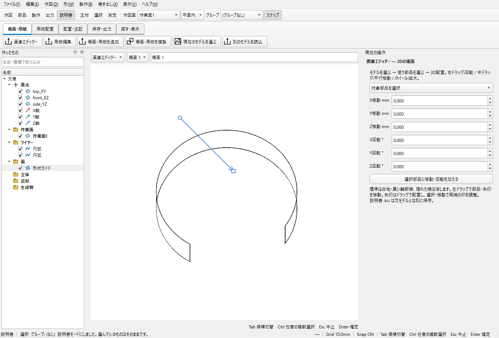
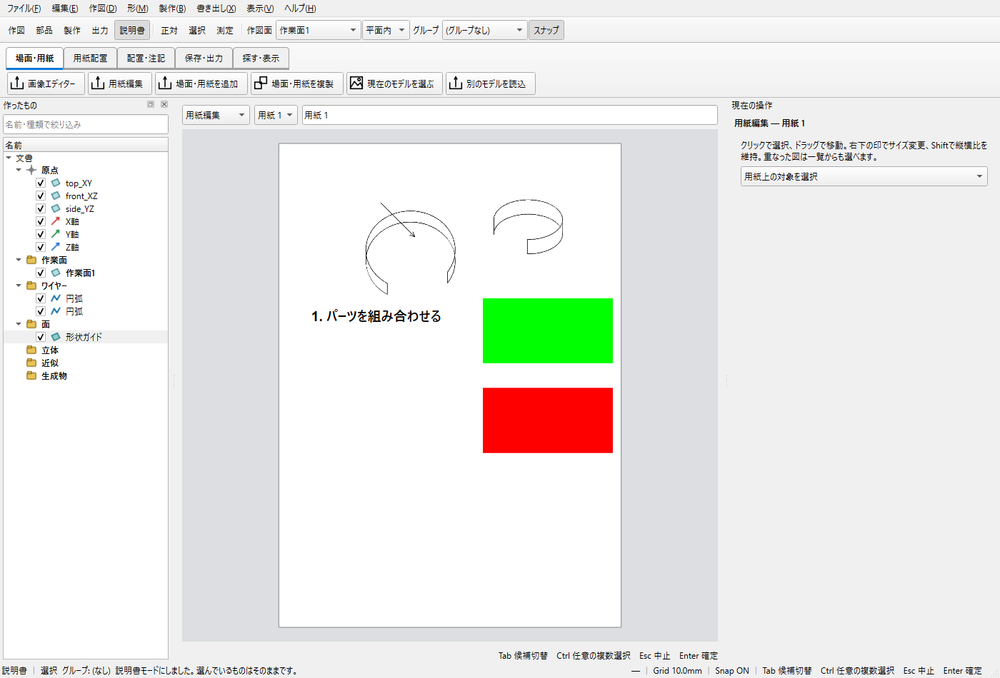

3D場面から画像入りの組立説明書を作る
画像エディターで作る場面と、用紙編集で作るページを分けます。用紙へ置く場面は3Dの状態を保持し、JPEG/PNG写真は別の画像要素です。説明書はモデルのKCD2とは別にKCIへ保存します。
未保存の原本で試さず、KCD2を別名保存して練習してください。
1 モデルを準備する
箱など2個以上の部品をCADで用意し、KCD2へ保存します。上部の説明書モードに移り「画像エディター」を選びます。
ここまでで：モデルの図形を直接動かす作業から、説明用の場面編集に切り替わります。
2 場面へ部品を置く
場面を追加し、「現在のモデルを選ぶ」を押します。使用部品へチェックを入れ「この場面に配置」を押します。
ここまでで：選んだ部品が説明用の場面へ入ります。チェックしただけでは配置されません。
3 組立位置を示す
選択・移動で屋根などの部品を離します。数値移動や回転は現在位置への加算なので、同じ値を何度も適用しないようにします。
ここまでで：元のKCD2の設計位置は変わりません。
4 矢印と文章を置く
場面内で「矢印」を選び、始点と終点を順に置きます。「番号・文章」で「屋根を差し込む」などを入力し、フォント・大きさ・太さを変えます。
ここまでで：矢印は用紙に直接作るのではなく、画像エディターの場面へ作ります。
5 用紙を作る
「用紙編集」を選び、用紙を追加します。「用紙サイズ」でA4と横向きを選びます。左の「作ったシーン」で先ほどの縮小画像を選び、用紙上の置く位置をクリックします。別のシーンも左で選んで並べます。
ここまでで：用紙上へ3D場面が配置されます。画像ファイルへ変換する必要はありません。
6 サイズと文章を整える
配置要素を選び、移動とサイズ変更で余白を整えます。必要ならJPEG/PNGを貼り、用紙の説明文を追加します。場面をダブルクリックすると元場面を編集できます。
ここまでで：場面と写真・文字を別々に選んで編集できます。
7 保存とPDFを分ける
「保存」で編集用KCIを保存し、用紙編集でPDFを出力します。場面編集中のPDFは現在場面1枚、用紙編集のPDFは全用紙です。
ここまでで：KCIは後から編集する正本、PDFは配布・印刷用です。
画面の参考


